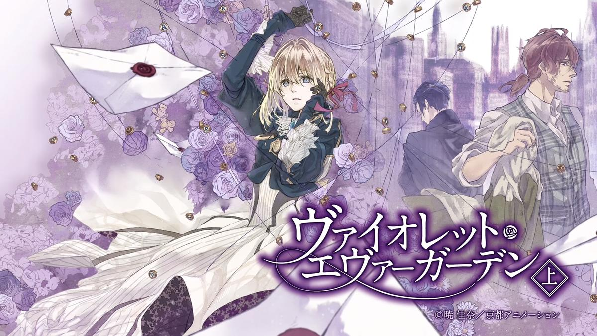
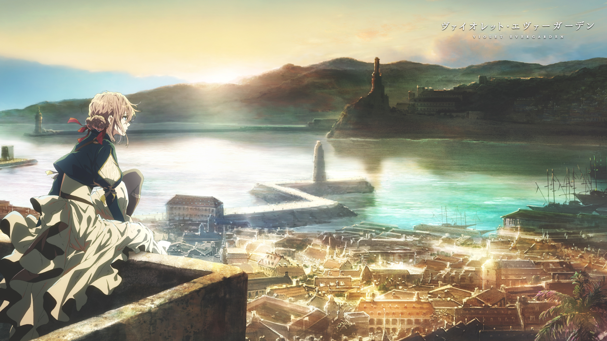

《紫羅蘭永恆花園》（ヴァイオレット・エヴァーガーデン）是由曉佳奈創作，高瀨亞貴子負責插畫的日本輕小說作品，由KA Esuma文庫出版與刊行。
自動手記人偶，是奧蘭多博士所製造，能將人類的話語記下並書寫的機械。當初，此種機械是奧蘭多博士為其身為小說家的愛妻所製。時至今日廣泛普及於世上，並出現能提供租借人偶的機構。此外，也有一群像人偶一樣，從事替人書寫工作的代筆者，也被稱為「自動手記人偶」。
因戰爭而失去雙手，後來裝上了義肢的少女——女主角薇爾莉特·艾佛加登，正是一名屬於C·H郵政社的金髮藍瞳自動手記人偶少女。為了能夠理解在戰場上重要之人所傳達的話語，她去往不同的地方，踏上一段尋找何謂「愛」的旅程，為不同的委託人工作，將對方的思念化作一封封的信件，將重要之言傳遞出去。
「如果客人有求的話不論何處都會驅身前往。我是自動書記人偶服務的——薇爾莉特·艾佛加登。」

薇爾莉特·艾佛加登（ヴァイオレット・エヴァーガーデン，Violet Evergarden，聲：石川由依）
克勞迪亞·霍金斯（クラウディア・ホッジンズ，Claudia Hodgins，聲：子安武人）
基爾伯特·布甘比利亞（ギルべルト・ブーゲンビリア，Gilbert Bougainvillea，聲：浪川大輔）
嘉德麗雅·波德萊爾（カトレア・ボードレール，Cattleya Baudelaire，聲：遠藤綾）
貝內迪克特·布盧（ベネディクト・ブルー，Benedict Blue，聲：內山昂輝）
Go to 主要人物詳細介紹
| 片頭曲《Sincerely》 作詞：唐澤美帆，作曲：堀江晶太，編曲：堀江晶太、Evan Call，主唱：TRUE | OP |
| 片尾曲《みちしるべ》 作詞、主唱：茅原實里，作曲、編曲：菊田大介 | ED |